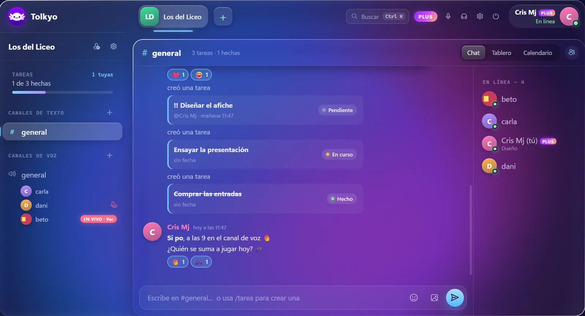
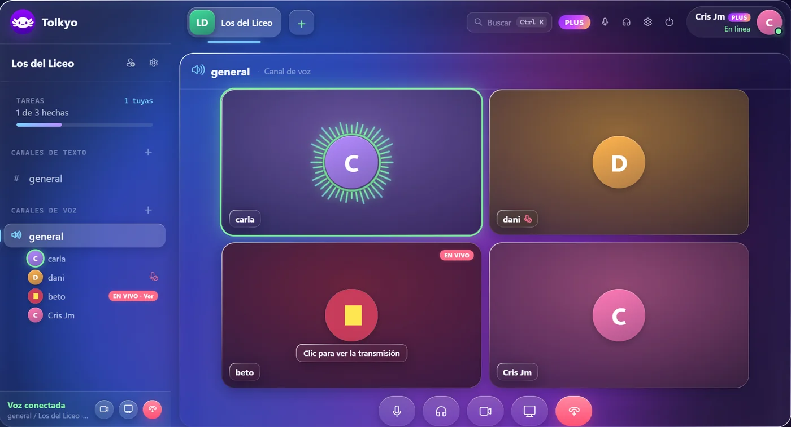
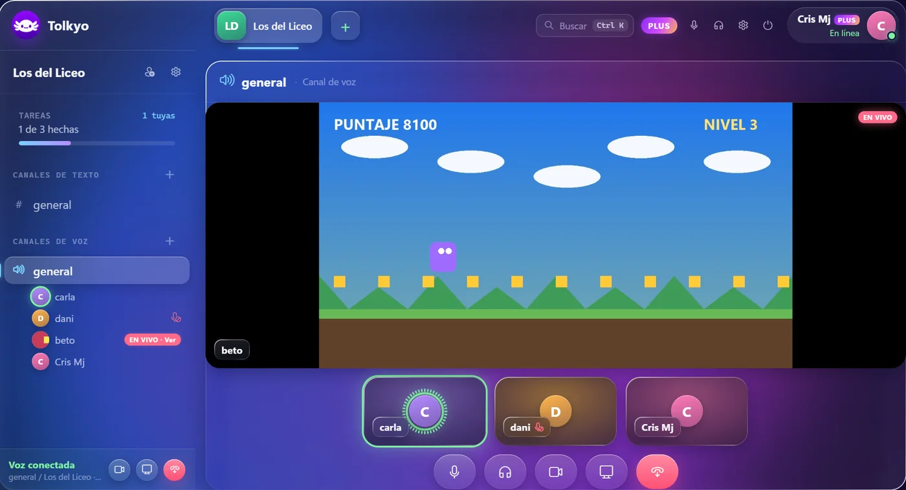
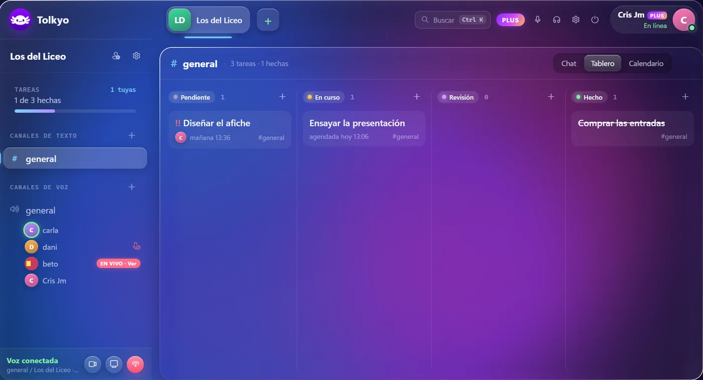
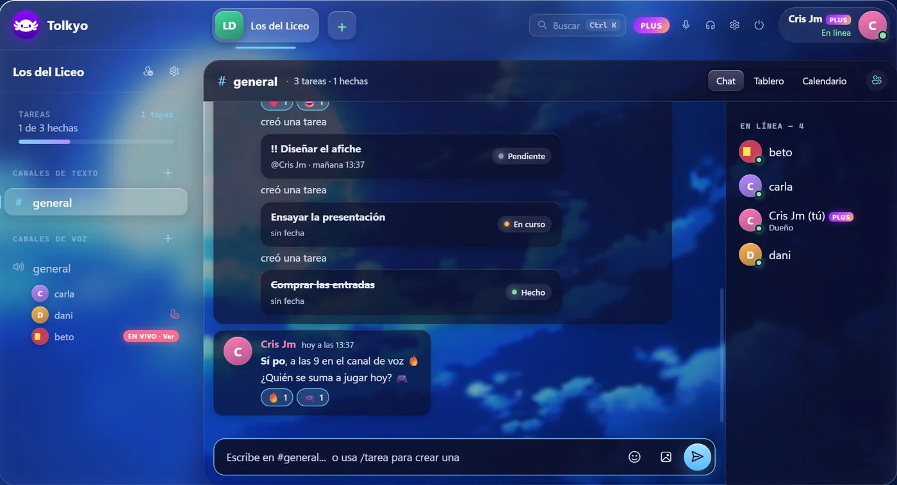
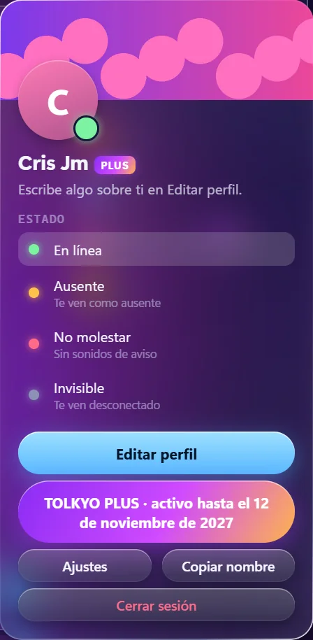

Habla, juega y organízate con tu gente.
Chat de grupo, llamadas con cámara, transmisiones hasta en 4K y tareas, todo en una sola app. Hecha en Chile.
Windows 10 y 11 · 64 bits · Sin anuncios

Tolkyo en 40 segundos
Conversa como te gusta
Servidores con canales de texto, reacciones con emoji, respuestas, imágenes y formato (negrita, cursiva, código). Si te pierdes, una línea te marca dónde quedaste.
- Mensajes directos con tus amigos
- Búsqueda rápida con Ctrl + K
- Roles y permisos para tu servidor
Únete cuando quieras
Canales de voz siempre abiertos: entras con un clic y ya estás hablando. Prende la cámara, silénciate o llama directo a un amigo, con timbre incluido.
- Voz clara con Opus
- Cámara en las llamadas
- Llamadas privadas entre amigos

Comparte tu partida, hasta en 4K
Transmite tu pantalla o un juego a quienes estén en la llamada, con su sonido.
Gratis hasta 1080p a 30 fps. 1080p a 60 fps, 2K y 4K con TOLKYO PLUS.

Organízate sin salir del chat
Cada servidor trae su tablero de tareas y su calendario. Crea una tarea desde el chat con /tarea, asígnala y muévela a «Hecho».

Un estilo para cada uno
Temas Noche, Día, Blanco y negro y Automático, vidrio líquido o estilo simple, esquinas redondeadas o cuadradas… y tu propia foto de fondo.


Sube de nivel
Tolkyo es gratis. PLUS es para quienes quieren más calidad y, de paso, ayudar a que el proyecto siga creciendo.
- Transmite en 1080p 60, 2K y 4KSin PLUS: hasta 1080p a 30 fps.
- Banner animadoPon un GIF en tu perfil.
- Cámara en HD720p en llamadas y videollamadas.
- Voz de estudioLa calidad de voz más clara.
- Temas exclusivosGalaxia y Oro.
- Mensajes más largos e insignia PLUSHasta 4.000 caracteres.
Descarga Tolkyo gratis
Versión BETA para Windows 10 y 11 (64 bits). Se actualiza sola.
Descargar para Windows- Descarga el instalador.
- Ábrelo. Si Windows muestra «Windows protegió tu PC», toca «Más información» y luego «Ejecutar de todas formas».
- Crea tu cuenta e invita a tu gente.
Preguntas frecuentes
¿Tolkyo es gratis?
Sí. Puedes chatear, hablar, prender la cámara y transmitir hasta 1080p a 30 fps sin pagar nada. TOLKYO PLUS es opcional.
¿Funciona en Mac o en el celular?
Por ahora solo en Windows 10 y 11. Más adelante queremos llegar a otras plataformas.
¿Por qué Windows me muestra una advertencia al instalar?
Porque Tolkyo es nuevo y todavía no tiene firma digital de Microsoft, que es pagada. Toca «Más información» y luego «Ejecutar de todas formas».
¿Necesito una tarjeta de video buena para transmitir en 4K?
Para 2K y 4K conviene tener una tarjeta de video (NVIDIA, AMD o Intel), porque Tolkyo la usa para comprimir el video. Para 720p y 1080p basta un PC normal.
¿Es una BETA?
Sí. Tolkyo está en desarrollo activo y recibe mejoras seguido; las actualizaciones se instalan solas.